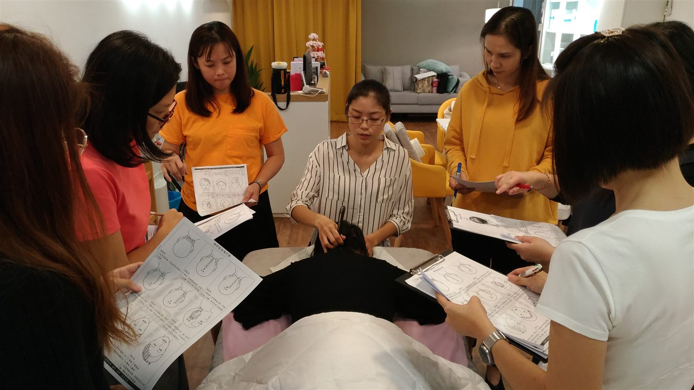
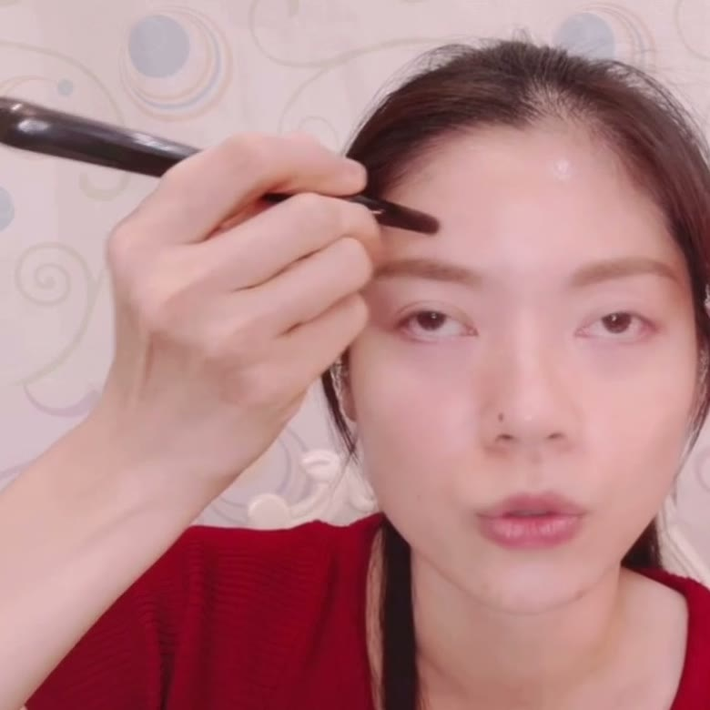

Start here
What is bojin — and how is it different from gua sha?
The honest, plain-English version — from someone who has taught it, one face at a time, for years.
Let me guess how this went. You bought a gua sha stone — maybe jade, maybe rose quartz, the pretty one everyone was posting. You watched a few videos. You ran it along your cheeks a handful of nights before bed. And then, somewhere between a long week and a tired evening, it drifted into a drawer.
Nothing bad happened. But nothing much happened either. The face in the mirror looked about the same.
Here’s what I want you to know, because I’ve heard it from women a thousand times: that wasn’t you failing. And it wasn’t the stone.
Gua sha is a tool. Bojin is a method. That’s the whole difference in one line.
A stone in a box can’t teach you anything. It can’t tell you where to start, which way to move, how firmly to press, or where to slow down. Most of us were handed the tool and never the method — so of course it felt like it did nothing. The magic was never in the object. It was in the instructions no one gave you.
So what is bojin?
The word is 撥筋 — bō jīn. Bō means to gently pluck, comb, and coax; jīn is the sinew and soft tissue that quietly hold tension in your face. Put together, it means to gently comb and release the tension your face has been holding. It grew from the same family of Chinese hands-on face care that gua sha grew from — sisters, not rivals. If you already know gua sha, you have a head start.
What actually makes it work
Not how hard or soft you press. It’s three things — and once you have them, the same stone and the same five minutes feel completely different.
Order 順序
The sequence you work in. You read your own face first, then move in a set order, so your minutes land where they’ll actually help.
Angle 角度
How you hold the tool against the bone. The right angle does the work — not force.
Position 位置
The exact spot — not roughly “the cheek,” but the precise place tension gathers and fluid pools.
Keep your stone. Add the three. Bojin isn’t a new tool to rush out and buy — it’s the order, the angle, and the spot that tell the tool what to do.
And you can start tonight with what you already have. Clean fingertips work. So does the gua sha stone in your drawer. You’re not buying your way in — you’re learning your way in.
Straight talk
What bojin is not
Because I’d rather you trust me than be dazzled, here’s the honest part:
- It’s not a stronger gua sha. It’s a different focus — the method behind the tool, not a competition with it.
- It’s not medical care, and not a treatment for anything.
- It won’t remove wrinkles, erase bags, or do what an injection does. Anyone who promises that isn’t being honest with you.
- It’s not about pressing hard — and not about barely touching. It’s the right, comfortable pressure: firm enough to feel, never enough to hurt.
What it can do is gentle and real: help your face look a little calmer, brighter, and more rested — and give you a quiet few minutes that are yours.

“The women who love this didn’t come to it for a miracle. They came for something honest they could do for themselves — a few minutes at a time.”
Your tool
The bojin stick
A clean product photo will go here soon — this is a diagram of the shape.
The traditional tool is a bojin stick — a slim, polished stainless steel tool, shaped to follow the curves of the face. It has two working ends: a broad, smooth edge for larger areas like the forehead, cheeks, and neck, and a small rounded tip for delicate spots such as around the eyes.
Why stainless steel? It’s easy to keep clean, it doesn’t wear down over time, and it uses no animal materials. It sits light in the hand and glides smoothly when you add a little oil or cream.
You don’t need to buy anything to begin. Clean fingertips work beautifully while you learn, and so does the smooth edge of a gua sha stone you already own. The bojin stick simply holds the right angle for you — something to add when you’re ready, not a barrier to starting today.
See it
You can read about it — or watch a hand do it
Order, angle, and pressure make a lot more sense the moment you see them. Here’s the first technique, free, in about three minutes.

The 3-minute Eye ResetFree · watch the order, angle & the exact spotCommon questions
The questions women ask me most
Is bojin just gua sha with a different name?
No. They come from the same family of Chinese hands-on face care, so they feel related, but they’re not the same thing. Gua sha usually means the tool and broad, gliding strokes. Bojin is its own more deliberate method — the order you work in, the angle you hold the tool, and the exact spot, at a comfortable pressure. You keep your gua sha stone and simply add the method.
Do I need to buy a special bojin stick to start?
No. You can begin with clean fingertips, or the smooth edge of a gua sha stone you already own. A bojin stick is the traditional tool the method was built around, and it holds the right angle for you, but it’s something to add later — not a barrier to starting today.
Is it safe, and does it hurt?
Done kindly it should feel good, never painful. The pressure is comfortable — firm enough to feel, never enough to hurt or drag the skin. Always use a little oil or cream so nothing pulls, avoid broken or irritated skin, stay off the eyeball itself, and stop if anything feels uncomfortable. This is gentle self-care, not medical treatment.
Is this only for older women?
Any adult can do it. It tends to feel most helpful after 40, when skin gets a little thinner and fluid and tension linger longer — but there’s no age it’s meant for. It’s simply a calm, everyday habit for your face.
How long until I see a difference?
It varies from person to person, and there are no guarantees. Some women notice their face looks a little calmer, brighter, or less puffy the same day; deeper, everyday change is gradual and comes from gentle, regular practice. Think everyday freshness, not a dramatic before-and-after.
Will bojin get rid of my wrinkles or replace Botox?
No, and it’s honest to say so. It won’t remove lines or do what an injection does. What it can do is soften held tension, support circulation, and help your face look a little more rested and relaxed. If you want a line changed at its source, that’s a conversation for a board-certified professional.
How often should I practise?
A few gentle minutes most days is plenty. Consistency matters far more than pressure or time — a calm five minutes, done regularly, serves your skin better than one long, forceful session.
Is bojin a medical treatment?
No. It’s a gentle beauty and self-care ritual, not medical care, and it isn’t a treatment for any condition. If you have a skin or health concern, or anything on your face appears suddenly, sits on one side, or comes with pain, please see your doctor rather than working on it at the mirror.
Ready to feel it?
See the method in three gentle minutes.
The free “Eye Reset” video shows you the order, the angle, and the exact spot — so you can feel the right, comfortable pressure for yourself.